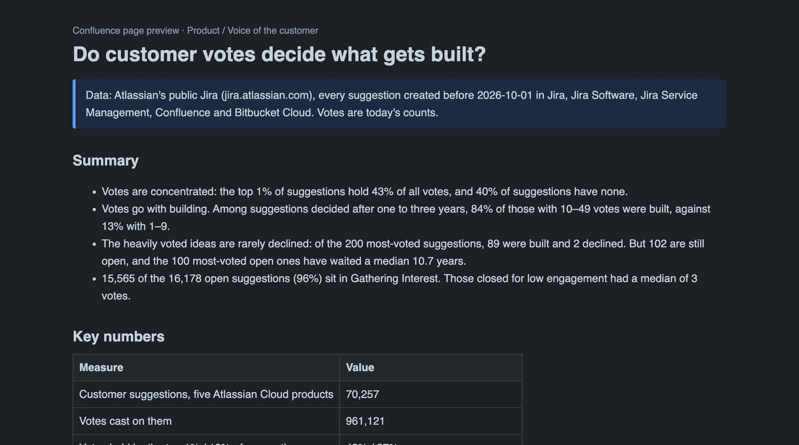
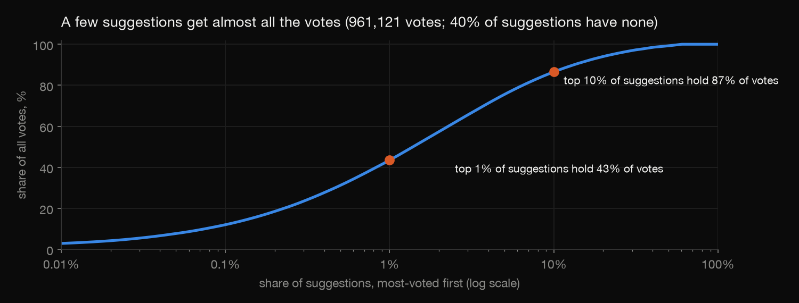
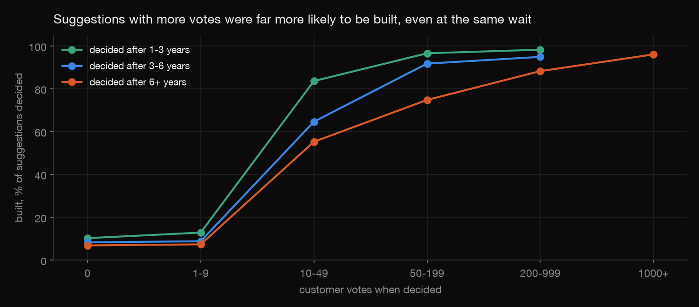
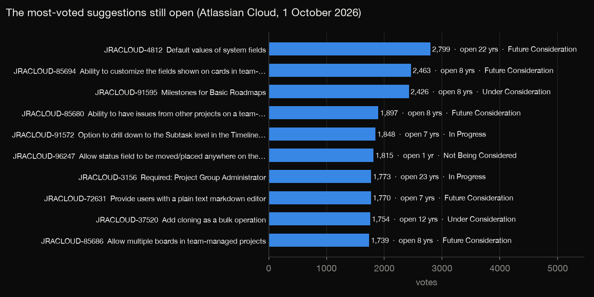
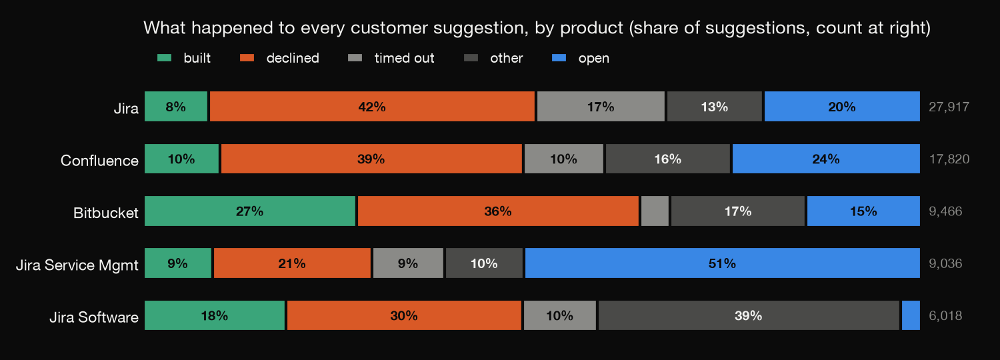

Jira · Confluence · Product analytics · 2026-10
Do Customer Votes Decide What Gets Built?
Every customer suggestion Atlassian has received for five cloud products (70,257, from its public Jira), analysed for whether voting works, and written up as a Confluence page with a live Jira macro.

Votes are today's counts (Jira keeps no history of votes), and the link between votes and building is an association: a feature already planned can also attract votes. One vendor's public backlog.
01 — The problem
Many software companies run a voting portal: customers file ideas, other customers vote, and the company says votes guide the roadmap. Atlassian runs its own in public, in Jira.
Do the most-voted ideas actually get built? How long do they wait? And what happens to the thousands of ideas almost nobody votes for?
02 — What I built
A pipeline from Atlassian's public Jira (jira.atlassian.com) to a Confluence page:
- Download 70,257 suggestions for Jira, Jira Software, Jira Service Management, Confluence and Bitbucket Cloud through the REST API with JQL, plus the server's own counts to check against.
- Outcomes: each Jira resolution becomes built, declined, closed for low interest, other or open.
- Analysis that compares suggestions that waited about as long before their decision, and a logistic model on top.
- Confluence page in storage format, with an info panel, tables, chart attachments and a live Jira issues macro, plus an HTML preview.
03 — How it was built
- 01
Download the whole backlog
JQL pages through every suggestion, 1,000 at a time, with a fixed creation cutoff so the set doesn't move while it downloads. Only product-feedback fields are kept; no names. Straight afterwards, the server is asked how many suggestions each product has with each resolution, and for its own top 20 by votes. Those answers are what the check compares against.
project = JRACLOUD AND issuetype = Suggestion AND created < "2026-10-01" ORDER BY key ASC - 02
Turn resolutions into outcomes
Jira has 21 different resolutions here. They fold into five groups: built (Fixed, Done, Deployed), declined (Won't Fix, Won't Do), closed for low interest (Timed out, Low Engagement), other (duplicates, answered questions, invalid) and open.
One trap: low-interest closures are closed because they have few votes. Comparing them with built suggestions would make votes look predictive by definition, so they're left out of every votes-versus-building comparison.
- 03
Compare like with like
Votes pile up while a suggestion waits, so a raw comparison mixes up popular with old. Suggestions are therefore compared within bands of how long they waited for a decision, and a logistic model (built ~ log₂ votes + log wait + product + era) puts a number on the link. Without the wait the odds ratio is 1.63 per doubling of votes; with it, 2.11. The longest-waiting suggestions have plenty of votes but are mostly declined, and that hid part of the effect.
- 04
Write it as a Confluence page
The report is generated in Confluence storage format, the XHTML that Confluence's REST API accepts as a page body. It has an info panel for the data note, tables, charts as attachments, and a Jira issues macro whose JQL lists the most-voted open suggestions live on every view. The preview linked above is the same page as plain HTML, with the macro's rows filled in from the download.
<ac:structured-macro ac:name="jira"> <ac:parameter ac:name="jqlQuery">project in (JRACLOUD, ...) AND issuetype = Suggestion AND resolution is EMPTY ORDER BY votes DESC</ac:parameter> </ac:structured-macro> - 05
Check against Jira itself
check.pycompares the local count for every product and resolution with the server's own count; all match exactly. The 20 most-voted suggestions per product match the server's own sort. DuckDB then recomputes the outcome table, build rates, the wait bands, vote concentration and the top open list straight from the raw JSON: 316 checks.One bug was caught on the way. DuckDB read the timestamps without a time zone, so daylight-saving shifts moved some waits across a band boundary; fixed by running in UTC.
04 — Results
Votes are concentrated. The top 1% of suggestions hold 43% of all 961,121 votes, the top 10% hold 87%, and 40% of suggestions have no votes at all.

Votes go with building, even at the same wait. Among suggestions decided after one to three years:
| Votes | Built | Decided |
|---|---|---|
| 0 | 10% | 6,676 |
| 1–9 | 13% | 5,735 |
| 10–49 | 84% | 420 |
| 50–199 | 97% | 173 |
Each doubling of votes goes with 2.11 times the odds of being built (95% CI 2.06–2.16), allowing for the wait, product and era.

Popular ideas are rarely declined, but they wait. Of the 200 most-voted suggestions, 89 were built, 2 declined and 102 are still open. The 100 most-voted open ones have a median of 889 votes and have been open a median of 10.7 years. The top one, "Default values of system fields" (2,799 votes), was filed 22 years ago.

The backlog is mostly waiting for interest. 96% of the 16,178 open suggestions sit in Gathering Interest. Those closed for low engagement had a median of 3 votes. And zero votes isn't zero demand: 4,144 suggestions were built with no votes, half within 60 days of being filed.

05 — What I'd do next
- Record vote counts weekly, to see whether votes come before a decision or after an announcement.
- Run the same analysis on another public portal, such as Microsoft's or a GitHub project's issue reactions.
- Publish the page to a real Confluence space through the REST API, with the charts uploaded as attachments.